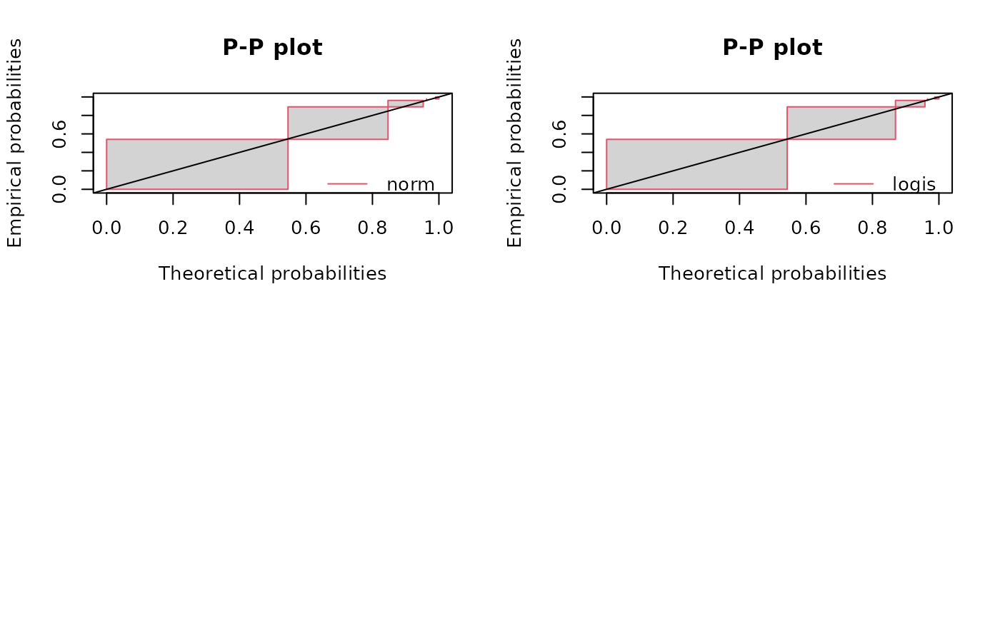
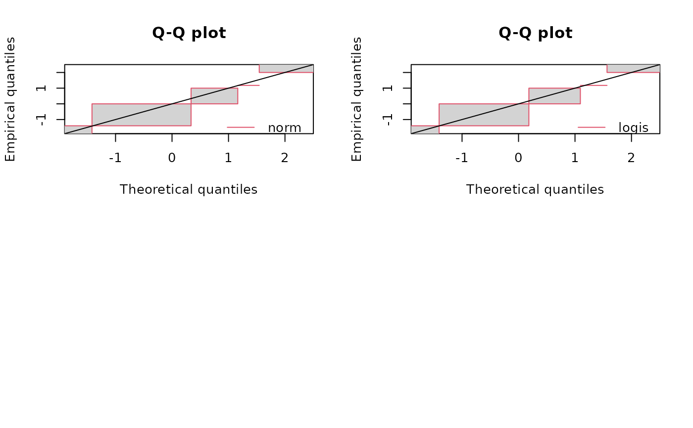

Graphical comparison of multiple fitted distributions for censored data
graphcompcens.Rdcdfcompcens plots the empirical cumulative distribution against fitted distribution functions,
qqcompcens plots theoretical quantiles against empirical ones,
ppcompcens plots theoretical probabilities against empirical ones.
Usage
cdfcompcens(ft, xlim, ylim, xlogscale = FALSE, ylogscale = FALSE, main, xlab, ylab,
datacol, fillrect, fitlty, fitcol, fitlwd, addlegend = TRUE, legendtext,
xlegend = "bottomright", ylegend = NULL, lines01 = FALSE,
Turnbull.confint = FALSE,
NPMLE.method = "Wang",
add = FALSE, plotstyle = "graphics", ...)
qqcompcens(ft, xlim, ylim, xlogscale = FALSE, ylogscale = FALSE, main, xlab, ylab,
fillrect, fitcol, fitlwd, addlegend = TRUE, legendtext, xlegend = "bottomright",
ylegend = NULL, line01 = TRUE, line01col = "black", line01lty = 1,
ynoise = TRUE, NPMLE.method = "Wang", plotstyle = "graphics", ...)
ppcompcens(ft, xlim, ylim, xlogscale = FALSE, ylogscale = FALSE, main, xlab, ylab,
fillrect, fitcol, fitlwd, addlegend = TRUE, legendtext, xlegend = "bottomright",
ylegend = NULL, line01 = TRUE, line01col = "black", line01lty = 1,
ynoise = TRUE, NPMLE.method = "Wang", plotstyle = "graphics", ...)Arguments
- ft
One
"fitdistcens"object or a list of objects of class"fitdistcens".- xlim
The \(x\)-limits of the plot.
- ylim
The \(y\)-limits of the plot.
- xlogscale
If
TRUE, uses a logarithmic scale for the \(x\)-axis.- ylogscale
If
TRUE, uses a logarithmic scale for the \(y\)-axis.- main
A main title for the plot, see also
title.- xlab
A label for the \(x\)-axis, defaults to a description of
x.- ylab
A label for the \(y\)-axis, defaults to a description of
y.- datacol
A specification of the color to be used in plotting data points.
- fillrect
A specification of the color to be used for filling rectanges of non uniqueness of the empirical cumulative distribution (only used if
NPMLE.methodis equal to"Wang"incdfcompcens). Fix it toNAif you do not want to fill the rectangles.- fitcol
A (vector of) color(s) to plot fitted distributions. If there are fewer colors than fits they are recycled in the standard fashion.
- fitlty
A (vector of) line type(s) to plot fitted distributions. If there are fewer values than fits they are recycled in the standard fashion. See also
par.- fitlwd
A (vector of) line size(s) to plot fitted distributions. If there are fewer values than fits they are recycled in the standard fashion. See also
par.- addlegend
If
TRUE, a legend is added to the plot.- legendtext
A character or expression vector of length \(\geq 1\) to appear in the legend, see also
legend.- xlegend, ylegend
The \(x\) and \(y\) coordinates to be used to position the legend. They can be specified by keyword. If
plotstyle = "graphics", seexy.coordsandlegend. Ifplotstyle = "ggplot", thexlegendkeyword must be one oftop,bottom,left, orright. See alsoguide_legendinggplot2- lines01
A logical to plot two horizontal lines at
h=0andh=1forcdfcompcens.- Turnbull.confint
if TRUE confidence intervals will be added to the Turnbull plot. In that case NPMLE.method is forced to
"Turnbull"- NPMLE.method
Three NPMLE techniques are provided,
"Wang", the default one, rewritten from the package npsurv using function constrOptim from the package stats for optimisation,"Turnbull.middlepoints", an older one which is implemented in the package survival and"Turnbull.intervals"that uses the same Turnbull algorithm from the package survival but associates an interval to each equivalence class instead of the middlepoint of this interval (see details). Only"Wang"and"Turnbull.intervals"enable the derivation of a Q-Q plot and a P-P plot.- add
If
TRUE, adds to an already existing plot. IfFALSE, starts a new plot. This parameter is not available whenplotstyle = "ggplot".- line01
A logical to plot an horizontal line \(y=x\) for
qqcompcensandppcompcens.- line01col, line01lty
Color and line type for
line01. See alsopar.- ynoise
A logical to add a small noise when plotting empirical quantiles/probabilities for
qqcompcensandppcompcens.ynoiseis only used when various fits are plotted with the"graphics"plotstyle. Facets are used instead with the"ggplot"plotstyle.- plotstyle
"graphics"or"ggplot". If"graphics", the display is built withgraphicsfunctions. If"ggplot", a graphic object output is created withggplot2functions (theggplot2package must be installed). In"cdfcompcens","ggplot"graphics are only available with"Wang"NPMLE technique.- ...
Further graphical arguments passed to graphical functions used in
cdfcompcens,ppcompcensandqqcompcens.
Details
See details of plotdistcens for a detailed description of provided goddness-of-fit plots.
See also
plotdistcens, survfit.formula, legend and par.
References
Turnbull BW (1974), Nonparametric estimation of a survivorship function with doubly censored data. Journal of American Statistical Association, 69, 169-173.
Wang Y (2008), Dimension-reduced nonparametric maximum likelihood computation for interval-censored data. Computational Statistics & Data Analysis, 52, 2388-2402.
Wang Y and Taylor SM (2013), Efficient computation of nonparametric survival functions via a hierarchical mixture formulation. Statistics and Computing, 23, 713-725.
Delignette-Muller ML and Dutang C (2015), fitdistrplus: An R Package for Fitting Distributions. Journal of Statistical Software, 64(4), 1-34.
Examples
# (1) Plot various distributions fitted to bacterial contamination data
#
data(smokedfish)
Clog10 <- log10(smokedfish)
fitsfn <- fitdistcens(Clog10,"norm")
summary(fitsfn)
#> Fitting of the distribution ' norm ' By maximum likelihood on censored data
#> Parameters
#> estimate Std. Error
#> mean -1.575392 2.043857
#> sd 1.539446 2.149561
#> Loglikelihood: -87.10945 AIC: 178.2189 BIC: 183.4884
#> Correlation matrix:
#> mean sd
#> mean 1.0000000 -0.4325228
#> sd -0.4325228 1.0000000
#>
fitsfl <- fitdistcens(Clog10,"logis")
summary(fitsfl)
#> Fitting of the distribution ' logis ' By maximum likelihood on censored data
#> Parameters
#> estimate Std. Error
#> location -1.5394230 1.706269
#> scale 0.8121862 1.352708
#> Loglikelihood: -86.45499 AIC: 176.91 BIC: 182.1794
#> Correlation matrix:
#> location scale
#> location 1.0000000 -0.3189915
#> scale -0.3189915 1.0000000
#>
dgumbel <- function(x,a,b) 1/b*exp((a-x)/b)*exp(-exp((a-x)/b))
pgumbel <- function(q,a,b) exp(-exp((a-q)/b))
qgumbel <- function(p,a,b) a-b*log(-log(p))
fitsfg<-fitdistcens(Clog10,"gumbel",start=list(a=-3,b=3))
#> Error in checkparamlist(arg_startfix$start.arg, arg_startfix$fix.arg, argddistname, hasnodefaultval): 'start' must specify names which are arguments to 'distr'.
summary(fitsfg)
#> Error: object 'fitsfg' not found
# CDF plot
cdfcompcens(list(fitsfn,fitsfl,fitsfg))
#> Error: object 'fitsfg' not found
cdfcompcens(list(fitsfn,fitsfl,fitsfg),datacol="orange",fillrect = NA,
legendtext=c("normal","logistic","Gumbel"),
main="bacterial contamination fits",
xlab="bacterial concentration (CFU/g)",ylab="F",
xlegend = "bottom",lines01 = TRUE)
#> Error: object 'fitsfg' not found
# alternative Turnbull plot for the empirical cumulative distribution
# (default plot of the previous versions of the package)
cdfcompcens(list(fitsfn,fitsfl,fitsfg), NPMLE.method = "Turnbull.middlepoints")
#> Error: object 'fitsfg' not found
# customizing graphical output with ggplot2
if (requireNamespace ("ggplot2", quietly = TRUE)) {
cdfcompcens <- cdfcompcens(list(fitsfn,fitsfl,fitsfg),datacol="orange",fillrect = NA,
legendtext=c("normal","logistic","Gumbel"),
xlab="bacterial concentration (CFU/g)",ylab="F",
xlegend = "bottom",lines01 = TRUE, plotstyle = "ggplot")
cdfcompcens + ggplot2::theme_minimal() + ggplot2::ggtitle("Bacterial contamination fits")
}
#> Error: object 'fitsfg' not found
# PP plot
ppcompcens(list(fitsfn,fitsfl,fitsfg))
#> Error: object 'fitsfg' not found
ppcompcens(list(fitsfn,fitsfl,fitsfg), ynoise = FALSE)
#> Error: object 'fitsfg' not found
par(mfrow = c(2,2))
ppcompcens(fitsfn)
ppcompcens(fitsfl)
ppcompcens(fitsfg)
#> Error: object 'fitsfg' not found
par(mfrow = c(1,1))

if (requireNamespace ("ggplot2", quietly = TRUE)) {
ppcompcens(list(fitsfn,fitsfl,fitsfg), plotstyle = "ggplot")
ppcompcens(list(fitsfn,fitsfl,fitsfg), plotstyle = "ggplot",
fillrect = c("lightpink", "lightblue", "lightgreen"),
fitcol = c("red", "blue", "green"))
}
#> Error: object 'fitsfg' not found
# QQ plot
qqcompcens(list(fitsfn,fitsfl,fitsfg))
#> Error: object 'fitsfg' not found
qqcompcens(list(fitsfn,fitsfl,fitsfg), ynoise = FALSE)
#> Error: object 'fitsfg' not found
par(mfrow = c(2,2))
qqcompcens(fitsfn)
qqcompcens(fitsfl)
qqcompcens(fitsfg)
#> Error: object 'fitsfg' not found
par(mfrow = c(1,1))

if (requireNamespace ("ggplot2", quietly = TRUE)) {
qqcompcens(list(fitsfn,fitsfl,fitsfg), ynoise = FALSE, plotstyle = "ggplot")
qqcompcens(list(fitsfn,fitsfl,fitsfg), ynoise = FALSE, plotstyle = "ggplot",
fillrect = c("lightpink", "lightblue", "lightgreen"),
fitcol = c("red", "blue", "green"))
}
#> Error: object 'fitsfg' not found